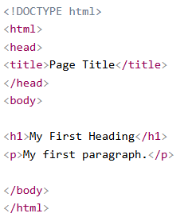
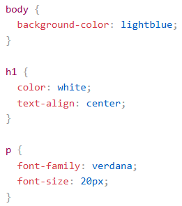

O que é HTML
Uma linguagem de marcação de texto para criar páginas da web
Saiba mais sobre o HTML AQUI
- HTML significa Hyper Text Markup Language
- HTML é a linguagem de marcação padrão para criação de páginas da Web
- HTML descreve a estrutura de uma página da Web
- Os elementos HTML informam ao navegador como exibir o conteúdo
- Os elementos HTML rotulam partes de conteúdo como "este é um título", "este é um parágrafo", "este é um link", etc.
Exemplo de estrutura

O que é CSS
CSS é a linguagem que usamos para estilizar uma página da Web.
Saiba mais sobre o CSS AQUI
- CSS significa Cascading Style Sheets
- CSS descreve como os elementos HTML devem ser exibidos na tela, no papel ou em outras mídias
- CSS economiza muito trabalho. Ele pode controlar o layout de várias páginas da web de uma só vez
- Folhas de estilo externas são armazenadas em arquivos CSS
Exemplo de estrutura
